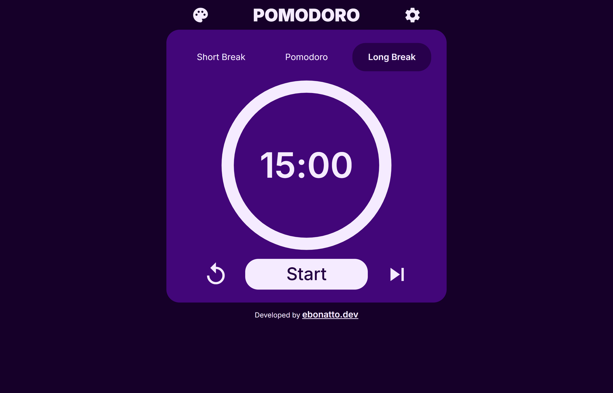
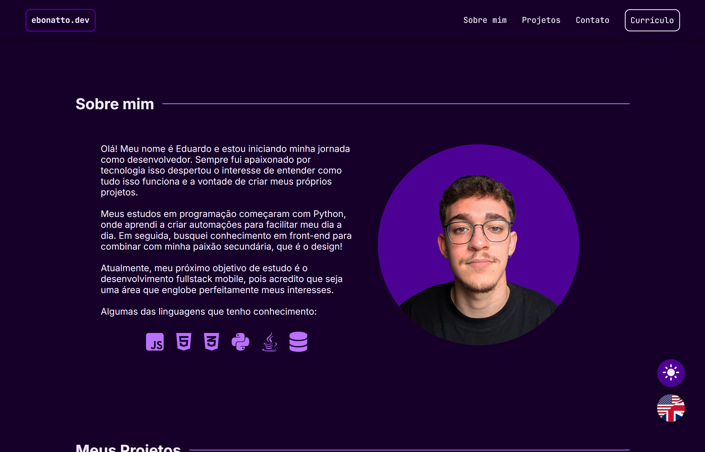

I'm a developer focused on building web and mobile applications with real impact, combining delivery speed, structured thinking, and a constant drive for technical growth. At SESI/RS, I develop solutions with Bubble.io and FlutterFlow, as well as APIs and Cloud Functions with Python and Node.js integrated with Firebase. Alongside this, I've been expanding my work with Google Cloud Platform, exploring the platform more broadly to support scalable applications and integrations.
My experience brings together product development, back-end integrations, and attention to user experience — allowing me to turn ideas into functional, scalable applications aligned with business needs. I work well across disciplines, understanding requirements clearly and translating technical topics into accessible communication, which helps bridge development, product, and operations.
I'm looking to grow as a developer and take on increasingly challenging projects — expanding beyond low-code and contributing to innovative digital products, including in international teams and environments.
Jun 2026 — Present
Mid-Level Low-code Developer
SESI/RS ↗Technically responsible for larger, higher-criticality projects, leading them with autonomy from conception through to production delivery. I define the architecture and technical stack for new solutions, evaluating trade-offs between low-code and custom development using Bubble.io, FlutterFlow, Python, and Firebase.
Aug 2024 — May 2026
Junior Low-code Developer
SESI/RS ↗Building applications with Bubble.io and FlutterFlow, creating APIs and Cloud Functions with Python and Node.js integrated with Firebase, and applying agile methodologies to support dynamic, scalable solutions.
Nov 2023 — Aug 2024
IT Intern
SESI/RS ↗Development of applications using low-code platforms, including Bubble and FlutterFlow, supporting internal projects and gaining hands-on experience in the full product development cycle.
MBA in Software Engineering
May 2025 — Present
MBA focused on software development and management, covering systems architecture, agile methodologies, DevOps, and technical leadership — with emphasis on designing, building, and evolving scalable solutions for real-world business environments.
Systems Analysis and Development
May 2023 — Dec 2025
Undergraduate degree focused on systems development, algorithms, software engineering, databases, and infrastructure — with emphasis on applied projects and real-world problem solving.
Certificates & Courses
- Bubble Developer Certification · Bubble.io 2025
- Mobile Development Residency (Swift) · Apple Developer Academy 2024
- Java Development · Geração Caldeira 2023
- Python & OOP · Alura 2022


Pomodoro Timer
A minimalist productivity timer implementing the Pomodoro technique. Features customizable block durations and color-themed options to help maintain focus and manage work sessions effectively.
ebonatto.dev (v1)
Previous version of this portfolio — a personal presentation site built with pure HTML and CSS. It was my first public-facing project that combined front-end skills with personal branding.